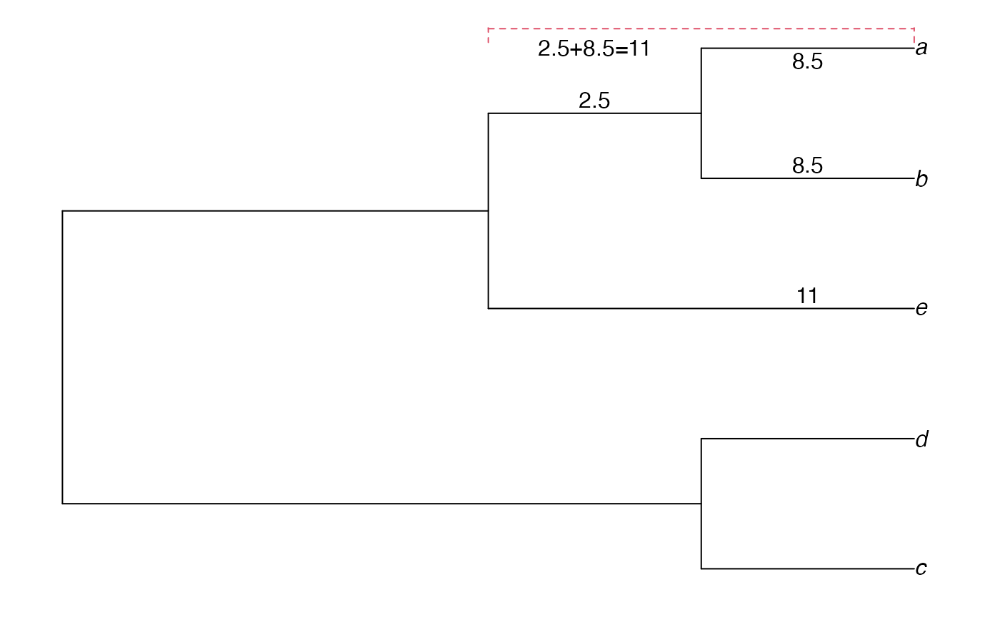
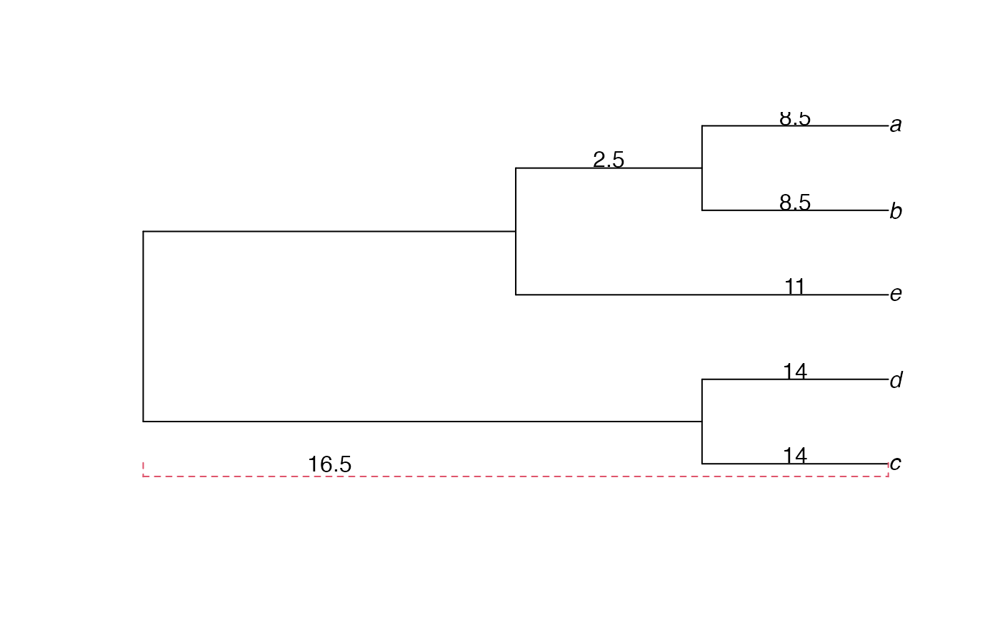
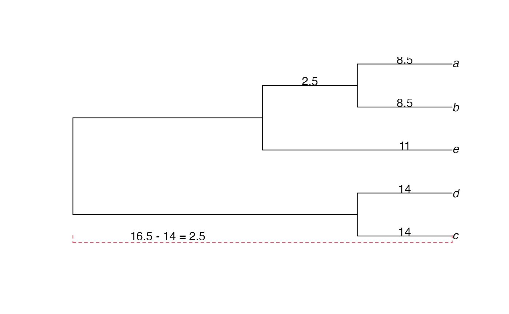
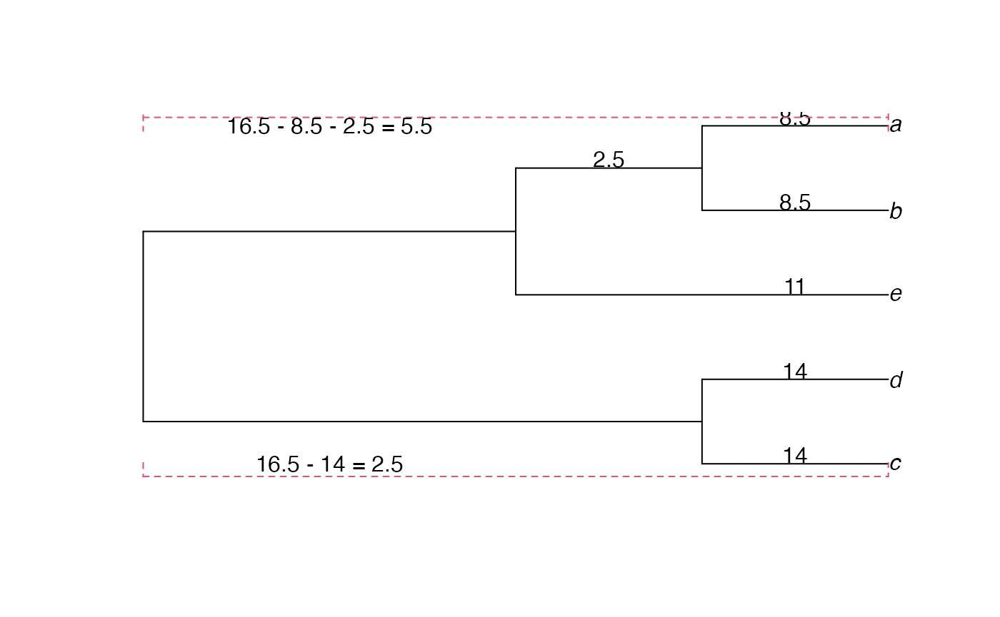

lll-UPGMA_wikipedia_homework-ALT-Q.Rmd
library(compbio4all)Data matrix from https://en.wikipedia.org/wiki/UPGMA#First_step
One way to make the data is to rbind() individual vectors as rows
# The data
# a b c d e
a <- c(0, 17, 21, 31, 23)
b <- c(17, 0, 30, 34, 21)
c <- c(21, 30, 0, 28, 39)
d <- c(31, 34, 28, 0, 43)
e <- c(23, 21, 39, 43, 0)
# Bind into a matrix
upgma.mat1 <- rbind(a,b,c,d,e)Add names using colnames()
The matrix is symmetrical. Its easier if you make redundant elements NA because we don’t need them.
We can access the diagonal directly and set it to NA like this
diag(upgma.mat1) <- NAIts clunkier but we can set the rest of the matrix to NA like this.
upgma.mat1[upper.tri(upgma.mat1)] <- NAit = iteration clust.i, clust.j = the two taxa or clades being combined dist.ij = value from distnace matrix between the taxa clust.u = name of the new combined cluster (clade) branch.l.ij = branch lengths
n.taxa <- nrow(upgma.mat1)
UPGMA_output <- data.frame(it = c(1:n.taxa),
clust.i = NA,
clust.j = NA,
dist.ij = NA,
clust.u = NA,
branch.l.ij = NA)The minimum distance
dist.min.i <- min(upgma.mat1, na.rm = T)The index values of the minimum
index.min.i <- which(upgma.mat1 == dist.min.i, arr.ind =T)
index.row.i <- index.min.i[1]
index.col.i <- index.min.i[2]We can get the names of our taxa using the
Add output to dataframe
UPGMA_output[1,"clust.i"] <- cluster.i1
UPGMA_output[1,"clust.j"] <- cluster.i2
UPGMA_output[1,"dist.ij"] <- dist.min.iCombine the two taxa names into a new name. This can be done a couple ways.
clade.i <- paste(cluster.i1,cluster.i2, sep = "")We’ll add this to the dataframe
UPGMA_output[1,"clust.u"] <- clade.iBranch length is distance/2 or d.ij/2
UPGMA_output[1,"branch.l.ij"] <- UPGMA_output[1,"dist.ij"]/2Distance (ab) to all other points ab to c ab to d ab to e
Using Swofford et al’s notation:
d.ku = (Ti x d.ki + Tj x d.kj)/(Ti + Tj)
I’ll switch the subscripts to be consistent with the Wikipedia notation
d.uk = (Ti x d.ik + Tj x d.jk)/(Ti + Tj)
where
u = our new cluster ab k = the remaining clusters; we’ll start with c Ti, Tj = the number of clusters the constitute the clusters that were just combined. This starts out at 1. Ti = Ta = 1 Tj = Tb = 1 d.ik = the distance from cluster i to the reamining clusters; we’ll start with c d.ik = d.ac = 21 d.jk = d.bc = 30
d.ku = (Ti x d.ik + Tj x d.jk)/(Ti + Tj) d.ku = (1 x 21 + 1 x 30 )/( 1 + 1 ) d.ku = ( 21 + 30 )/(2) d.ku = 51/2 d.ku = 25.5
The Swofford notation is more generic and useful because in the next iteration we’ll have a cluster of ab which will have two taxa in it.
Ta <- 1
Tb <- 1
Da_c <- 21
Db_c <- 30
Dab_c <- (Ta*Da_c+Tb*Db_c)/2We now continue for the other distances. I’ll stick to the wikipedia notation for now.
D(ab to d) = [D(a to d) + D(b to d)] / 2 D(ab to d) = [ 31 + 34 ] / 2 D(ab to d) = [ 31 + 34 ] / 2 D(ab to d) = 32.5
Dab_d = [Da_d + Db_d] / 2 Dab_d = 32.5
Ta <- 1
Tb <- 1
Da_d <- 31
Db_d <- 34
Dab_d <- (Ta*Da_d+Tb*Db_d)/2D(ab to d) = [D(a to d) + D(b to d)] / 2 D(ab to d) = [ 23 + 21 ] / 2 D(ab to d) = [ 23 + 21 ] / 2 D(ab to d) = Dab_e
Dab_d = [Da_d + Db_d] / 2 Dab_d = Dab_e
Ta <- 1
Tb <- 1
Da_e <- 23
Db_e <- 21
Dab_e <- (Ta*Da_e+Tb*Db_e)/2The distances are
Dab_c
#> [1] 25.5
Dab_d
#> [1] 32.5
Dab_e
#> [1] 22Old matrix has distances from a and b to all other points: we want to replace these. distances among c, d, and e are still the same values.
upgma.mat1
#> a b c d e
#> a NA NA NA NA NA
#> b 17 NA NA NA NA
#> c 21 30 NA NA NA
#> d 31 34 28 NA NA
#> e 23 21 39 43 NAValues in parenthesese will be REPLACED
a <- c(NA, NA, NA, NA, NA)
b <- c("(17)", NA, NA, NA, NA)
c <- c("(21)", "(30)", NA, NA, NA)
d <- c("(31)", "(34)", "28", NA, NA)
e <- c("(23)", "(21)", "39", "43", NA)
upgma.mat1.alt <- rbind(a,b,c,d,e)
colnames(upgma.mat1.alt) <- c("a","b","c","d","e")
upgma.mat1.alt
#> a b c d e
#> a NA NA NA NA NA
#> b "(17)" NA NA NA NA
#> c "(21)" "(30)" NA NA NA
#> d "(31)" "(34)" "28" NA NA
#> e "(23)" "(21)" "39" "43" NACreate smaller matrix with clade ab
We’ve combined a and b and calculated the disnace of this clade (a,b) to the remaining taxa. What is now the minimum distance?
The minimum distance of the current matrix
dist.min.i <- min(upgma.mat2, na.rm = T)The index value of the current minimum
index.min.i <- which(upgma.mat2 == dist.min.i, arr.ind =T)
index.row.i <- index.min.i[1]
index.col.i <- index.min.i[2]We can get the names of our taxa using the
Add output to dataframe
UPGMA_output[2,"clust.i"] <- cluster.i1
UPGMA_output[2,"clust.j"] <- cluster.i2
UPGMA_output[2,"dist.ij"] <- dist.min.iCombine the two taxa names into a new name. This can be done a couple ways.
clade.i <- paste(cluster.i1,cluster.i2, sep = "")We’ll add this to the dataframe
UPGMA_output[2,"clust.u"] <- clade.iBranch length is distance/2 or d.ij/2 = d.ab.e = 22/2
UPGMA_output[2,"branch.l.ij"] <- UPGMA_output[2,"dist.ij"]/2In the current matrix, the smallest distance is between ab and e
We therefore want to form a clade between ab and e (abe), the measure the distance from this clade to allthe other species.
NOTE: calculations are “weighted” in proportion number of species in clade. So D(ab to c) is multiplied by two because ab is 2 species
The denominators is 3 because of the weights used in the numerator.
The notation in the Wikipedia article is:
D(abe to c) = [2D(ab to c)2 + 1*D(e to c)] / (2+1) D(abe to c) = [ 25.52 + 391 ] / (2+1) D(abe to c) = [ 25.52 + 391 ] / (2+1) D(abe to c) = 32.5
Dabe_c = [Dab_c2 + De_c1] / (2+1) Dabe_c = 32.5
T.ab <- 2
T.e <- 1
Dab_c <- 25.5
De_c <- 39
Dabe_c <- (T.ab*Dab_c + T.e*De_c)/(T.ab+T.e)The minimum distance of the current matrix
dist.min.i <- min(upgma.mat3, na.rm = T)The index value of the current minimum
index.min.i <- which(upgma.mat3 == dist.min.i, arr.ind =T)
index.row.i <- index.min.i[1]
index.col.i <- index.min.i[2]We can get the names of our taxa using the
Add output to dataframe
UPGMA_output[3,"clust.i"] <- cluster.i1
UPGMA_output[3,"clust.j"] <- cluster.i2
UPGMA_output[3,"dist.ij"] <- dist.min.iCombine the two taxa names into a new name. This can be done a couple ways.
clade.i <- "cd"
clade.i <- paste("c","d",sep = "")
clade.i <- paste(cluster.i1,cluster.i2, sep = "")We’ll add this to the dataframe
UPGMA_output[3,"clust.u"] <- clade.iThe final entry of the matrix is 33. This means that the distnace from the clade abe to the clade de is 33, with branch length of 33/2 = 16.5
The minimum distance
dist.min.i <- min(upgma.mat4, na.rm = T)The index value of the minimum
index.min.i <- which(upgma.mat4 == dist.min.i, arr.ind =T)
index.row.i <- index.min.i[1]
index.col.i <- index.min.i[2]We can get the names of our taxa using the
Add output to dataframe
UPGMA_output[4,"clust.i"] <- cluster.i1
UPGMA_output[4,"clust.j"] <- cluster.i2
UPGMA_output[4,"dist.ij"] <- dist.min.iCombine the two taxa names into a new name. This can be done a couple ways.
clade.i <- paste(cluster.i1,cluster.i2, sep = "")We’ll add this to the dataframe
UPGMA_output[4,"clust.u"] <- clade.iWe now have a final tree structure. In Newick format it would be
library(ape)
full.tree <- "((c,d),(e,(b, a)));" # semi colon!
full.tree <-read.tree(text=full.tree)
plot(full.tree, main = "3-taxa tree")While we’ve done our clustering we’ve calcualte branch lengths and put them in the column branch.l.ij of the dataframe UPGMA_output
UPGMA_output
#> it clust.i clust.j dist.ij clust.u branch.l.ij
#> 1 1 a b 17 ab 8.5
#> 2 2 ab e 22 abe 11.0
#> 3 3 c d 28 cd 14.0
#> 4 4 abe cd 33 abecd 16.5
#> 5 5 <NA> <NA> NA <NA> NAThe following code adds them to the tree.
First, the brnach lenghts from a to b
plot(full.tree, main = "")
# a-b branch lengths= 8.5
text(x = 3.5,y = 5.1,labels = 8.5)
text(x = 3.5,y = 4.1,labels = 8.5)now a to b, and ab to e
plot(full.tree, main = "")
# a-b branch lengths= 8.5
text(x = 3.5,y = 5.1,labels = 8.5)
text(x = 3.5,y = 4.1,labels = 8.5)
# ab-e branch lengths= 1
text(x = 3.5,y = 3.1,labels = 11)There’s a branch between the clade ab and the node that connects with e. What’s its length? FOr a simple ultrametric tree calcualted with UPGMA we can calculate this by subtraction
11-8.5
#> [1] 2.5We’ll added this short branch of 2.5. Note this things ARE NOT to scale.
plot(full.tree, main = "")
# a-b branch lengths= 8.5
text(x = 3.5,y = 5.1,labels = 8.5)
text(x = 3.5,y = 4.1,labels = 8.5)
# ab-e branch lengths= 1
text(x = 3.5,y = 3.1,labels = 11)
# short branch
text(x = 2.5,y = 4.6,labels = 2.5)To visualize exactly what is going on here its useful to add this
par(mar = c(1,1,1,1))
plot(full.tree, main = "")
# a-b branch lengths= 8.5
text(x = 3.5,y = 4.9,labels = 8.5)
text(x = 3.5,y = 4.1,labels = 8.5)
# ab-e branch lengths= 1
text(x = 3.5,y = 3.1,labels = 11)
# short branch
text(x = 2.5,y = 4.6,labels = 2.5)
arrows(x0 = 2,x1 = 4,y0 =5.15,y1=5.15, code =3,angle = 90,length =0.1, lty =2, col = 2)
text(x = 2.5,y = 5,labels = "2.5+8.5=11")
We can now add the d-e branch of 14 (note again - not to scale!)
plot(full.tree, main = "")
# a-b branch lengths= 8.5
text(x = 3.5,y = 5.1,labels = 8.5)
text(x = 3.5,y = 4.1,labels = 8.5)
# ab-e branch lengths= 1
text(x = 3.5,y = 3.1,labels = 11)
# short branch
text(x = 2.5,y = 4.6,labels = 2.5)
# d-e branch
text(x = 3.5,y = 1.1,labels = 14)
text(x = 3.5,y = 2.1,labels = 14)The distance from abe to de is 16.5 We can visualize this as
plot(full.tree, main = "")
# a-b branch lengths= 8.5
text(x = 3.5,y = 5.1,labels = 8.5)
text(x = 3.5,y = 4.1,labels = 8.5)
# ab-e branch lengths= 1
text(x = 3.5,y = 3.1,labels = 11)
# short branch
text(x = 2.5,y = 4.6,labels = 2.5)
# d-e branch
text(x = 3.5,y = 1.1,labels = 14)
text(x = 3.5,y = 2.1,labels = 14)
arrows(x0 = 0,x1 = 4,y0 =0.85,y1=0.85, code =3,angle = 90,length =0.1, lty =2, col = 2)
text(x = 1,y = 1,labels = 16.5)
We can calcualte the distance of the remaining short branch from de to the root as 16.5-14 = 2.5. When we plot this again, it won’t be to scale
plot(full.tree, main = "")
# a-b branch lengths= 8.5
text(x = 3.5,y = 5.1,labels = 8.5)
text(x = 3.5,y = 4.1,labels = 8.5)
# ab-e branch lengths= 1
text(x = 3.5,y = 3.1,labels = 11)
# short branch
text(x = 2.5,y = 4.6,labels = 2.5)
# d-e branch
text(x = 3.5,y = 1.1,labels = 14)
text(x = 3.5,y = 2.1,labels = 14)
arrows(x0 = 0,x1 = 4,y0 =0.85,y1=0.85, code =3,angle = 90,length =0.1, lty =2, col = 2)
text(x = 1,y = 1,labels = "16.5 - 14 = 2.5")
We can calculate the remaining short branch from abe to the root as 16.5-8.5-2.5 =16.5-11 =5.5
plot(full.tree, main = "")
# a-b branch lengths= 8.5
text(x = 3.5,y = 5.1,labels = 8.5)
text(x = 3.5,y = 4.1,labels = 8.5)
# ab-e branch lengths= 1
text(x = 3.5,y = 3.1,labels = 11)
# short branch
text(x = 2.5,y = 4.6,labels = 2.5)
# d-e branch
text(x = 3.5,y = 1.1,labels = 14)
text(x = 3.5,y = 2.1,labels = 14)
arrows(x0 = 0,x1 = 4,y0 =0.85,y1=0.85, code =3,angle = 90,length =0.1, lty =2, col = 2)
text(x = 1,y = 1,labels = "16.5 - 14 = 2.5")
arrows(x0 = 0,x1 = 4,y0 =5.1,y1=5.1, code =3,angle = 90,length =0.1, lty =2, col = 2)
text(x = 1,y = 5,labels = "16.5 - 8.5 - 2.5 = 5.5")
So the final tree has branch lengths (not to scale!) of
plot(full.tree, main = "")
# a-b branch lengths= 8.5
text(x = 3.5,y = 5.1,labels = 8.5)
text(x = 3.5,y = 4.1,labels = 8.5)
# ab-e branch lengths= 1
text(x = 3.5,y = 3.1,labels = 11)
# short branch
text(x = 2.5,y = 4.6,labels = 2.5)
# d-e branch
text(x = 3.5,y = 1.1,labels = 14)
text(x = 3.5,y = 2.1,labels = 14)
text(x = 1,y = 1.6,labels = "2.5")
text(x = 1,y = 4,labels = "5.5")Most of the time we don’t include branch lengths in Newick format, but there is a way to do it. You don’t need to know how to do this - this is just for illustration
full.tree <- "((c:14,d:14):2.5,(e:11,(b:8.5, a:8.5):2.5):5.5);" # semi colon!
full.tree <-read.tree(text=full.tree)
plot(full.tree, main = "")
text(x = 10,y = 5.1,labels = 8.5)
text(x = 10,y = 4.1,labels = 8.5)
# ab-e branch lengths= 1
text(x = 10,y = 3.1,labels = 11)
# short branch
text(x = 7,y = 4.6,labels = 2.5)
# d-e branch
text(x = 10,y = 1.1,labels = 14)
text(x = 10,y = 2.1,labels = 14)
text(x = 1.5,y = 1.6,labels = "2.5")
text(x = 1.5,y = 3.9,labels = "5.5")